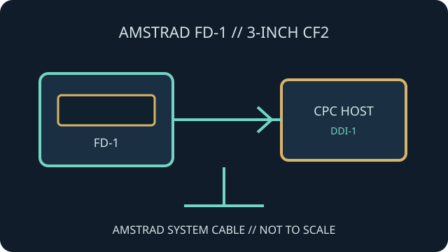

[ INDIVIDUAL COMPONENT // FLOPPY DRIVES ]
Amstrad FD-1 External Disk Drive
The Amstrad FD-1 is an external 3-inch disk drive associated with the DDI-1 disk interface for the CPC464. The drive and interface form a system; neither should be mistaken for a standard PC floppy peripheral.

IDENTIFICATION NOTE: This record covers the FD-1 drive and its documented DDI-1 connection. CPC664/6128 built-in-drive systems have different arrangements; check the computer and interface revision before adding another drive.
Model specifications
| Catalog subcategory | External floppy mechanisms |
|---|---|
| Exact model | Amstrad FD-1 external floppy disk drive |
| Media format | 3-inch CF2-family diskette format, not 3.5-inch or 3-inch Compact Disc media. |
| Host interface | Amstrad-specific cable to the DDI-1 disk interface; use the interface and power arrangement specified in the service manual. |
| Host compatibility | Intended for Amstrad CPC systems with the appropriate external interface, especially the CPC464/DDI-1 arrangement. Other CPC models can have different integrated-drive configurations. |
| Capacity / format | Format and usable capacity follow the Amstrad CPC disk system, DDI-1 firmware and CP/M/DOS tools; confirm exact media and formatting requirements from manuals. |
Model-specific compatibility checks
- Check whether the target host is a CPC464 with a DDI-1 or a later CPC with an integrated disk drive; do not infer cable compatibility.
- Verify connector orientation, interface power path and drive selection using the service document before energizing the unit.
- Inspect 3-inch CF2 media carefully and keep it separate from 3.5-inch diskettes, which are physically and magnetically different formats.
Preservation and service notes
Document drive and DDI-1 serials, cable arrangement, drive-select settings and host model before service. Use the FD-1/DDI-1 service manual for the combined interface and mechanism.
Do not force the shutters or insert contaminated CF2 media. Preserve disk images and the source physical media history together.
Manufacturer documentation & sources
- Amstrad Consumer Electronics — DDI-1 / FD-1 Service ManualOriginal service documentation for the disk interface and FD-1 mechanism.
- Classic Computers — Amstrad FD-1 external disk drivePreservation and use notes documenting the FD-1's external-drive context.
Prioritize Amstrad documentation for connector, servicing and host compatibility decisions.